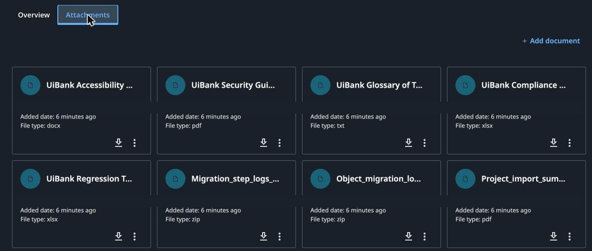
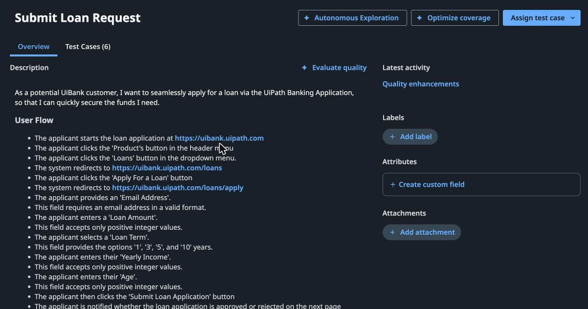

2. Evaluate the Requirement¶
Why it matters for you: test cases are only as good as the requirement they come from. A vague rule gives vague tests – and arguments at sign-off about what "rejected" was supposed to mean.
Vague or incomplete requirements lead to gaps in testing. Evaluate quality, an Autopilot button in Test Manager, reads a requirement and finds gaps – undefined thresholds, ambiguous input formats, missing edge cases or validation rules – and suggests fixes. You decide which suggestions to keep. Buttons like this one don't use your AI usage pool.
Evaluate the requirement with Autopilot¶
- Open Requirements → Submit Loan Request.
- On the requirement page, select + Evaluate quality, next to the Description heading. (The buttons at the top of the page – + Autonomous Exploration, + Optimize coverage and Assign test case – come later.)
-
In Provide additional context → Add documents, select these project documents (marked P), so Autopilot checks the requirement against their rules:
✅ UiBank Security Guidelines.pdf – input validation rules for the form fields
✅ UiBank Accessibility Guidelines.docx – form labels, error messages and keyboard access

You may also see Project_import_summary_
.pdf , created by your import in step 1. Leave it unselected.Where do these documents come from?
They're the project's attachments, under Dashboard → Attachments. Anyone on the project can add documents there, and Autopilot can read them.

-
On the next screen:
-
Select a prompt: choose Multifaceted Audit.
Editing prompts and adding your own
The built-in prompts are editable, and you can add custom prompts of your own – for example your team's checklist for requirements. Manage them in the Prompt Library, under Project Settings.
-
Keep the default model.
- Select Evaluate quality. The panel says Evaluating quality and that you can close it. Autopilot takes about a minute, and you're notified when it's done.
-
-
Under Latest activity, on the right of the requirement, select Quality enhancements. The Enhancement suggestions panel opens with the list, each with the status To do. If you kept the panel open, it shows them as soon as Autopilot finishes.

Turn suggestions into rules¶
A suggestion tells you what's missing. Your job as the analyst is to replace it with the actual business rule.
-
Expand each suggestion. Select Add to Requirement for the ones you agree with. Its status changes from To do to In work, and its title and suggestion appear at the end of the description.
Add to Requirement closes the panel: reopen Quality enhancements for the next one.
Read this before you click Add to Requirement
With workshop rights, suggestions made by the + Evaluate quality button can't be applied: Add to Requirement and the status drop-down open a page that says "You do not have the necessary rights to access this application." with a Click here to logout button. Suggestions made through Autopilot chat work normally.
✅ Don't click Click here to logout. Press the browser Back button, or open the requirement again.
✅ Then run the same evaluation in Autopilot chat – see Evaluate in Autopilot chat below – and select its Review link. In that list, Add to Requirement and the status drop-down work: carry on from here.
✅ No time for chat? Copy the suggestion's title into the requirement description yourself, write the rule under it (item 3), and skip item 4.
-
Pick 1–2 suggestions about outcomes or messages, such as boundaries, rejection rules or the result page: you'll replace them with UiBank's exact text.
-
Edit the requirement. Under each added title, replace the suggestion with the rule itself, using the exact text UiBank shows. Your changes save when you click outside the description.
Sample: turn a suggestion into a rule
Your suggestions may differ. This one says rejection rules are missing:

Applying with its second example in UiBank ($150,000 for 3 years, $400,000 income) gives the exact text. The acceptance criteria already have a rule for this case, with a different message, so update that rule instead of adding one:
Applicants 18-65 years old, requesting >$100,000 without income >3x loan amount: Reject with "You must be at least 18 years old for a loan and the loan must not exceed 100k." -
Set the status of each suggestion you used to Done, from its status drop-down. Rights page again? You're in the button-made list: use the chat-made list from Review.
Check it
✅ Each title you added has a rule under it, not the suggestion.
✅ Each rule names a boundary you could test (an age, an amount) and the exact message UiBank shows.
Evaluate in Autopilot chat¶
The same request in Autopilot chat – use it if Add to Requirement shows the rights page
Open the Autopilot panel (top bar, Edit mode) and type:
Evaluate the quality of the Submit Loan Request requirement and list the top 5 suggestions.
Autopilot asks you to approve Get_requirements, then shows the card Evaluate Requirement Quality with the requirement, documents, prompt and model it will use. Select Accept each time. After about a minute it says "Evaluated with 14 suggestions" (your number may differ), lists the top 5 and gives a Review button. Review opens the chat-made Enhancement suggestions list, where Add to Requirement works – you see "Suggestion added to the requirement." Chat doesn't change the requirement by itself.
Same result, two ways in: the + Evaluate quality button doesn't use your AI usage pool and lets you pick documents and a prompt; the chat version uses your AI usage pool but fits into a conversation – for example "…and tell me which suggestion matters most for the over-65 rule".
Fix the under-18 rule¶
The original acceptance criteria need the same check. Test cases are generated from the requirement's text, so its messages must match what UiBank shows. The requirement says what UiBank should do: match its wording, not its behavior.
-
In UiBank, go to Products → Loans → Apply For A Loan. Fill in any email, an amount of
5000, any term, an income of50000and an age of 17, then submit. UiBank shows two lines:Sorry, at this time you have not been approved for a loan.
You must be at least 18 years old for a loan and the loan must not exceed 100k.
-
Edit Submit Loan Request. In the under 18 rule only, replace "Not approved due to age." with UiBank's two lines. For example:
Applicants under 18 years old: Reject with "Sorry, at this time you have not been approved for a loan." and the reason "You must be at least 18 years old for a loan and the loan must not exceed 100k."It saves when you click outside the description.
-
Leave the over 65 rule exactly as it is. It says what the business wants – a rejection – and you'll test UiBank against it from step 3 on.
Check it
✅ The under 18 rule shows UiBank's two lines, word for word.
✅ The over 65 rule still says "Not approved due to age."
Make every rule measurable
Back at your desk, give every rule the same treatment: exact boundaries (18, 65, $100,000), the exact approval message ("Congrats! You've been approved for a loan with UiBank!") and the exact rejection message. 3. Generate Test Cases generates test cases from this text, so every vague word becomes a vague test step.
Nice work!¶
Your requirement is clearer and testable – ready for generating test cases.